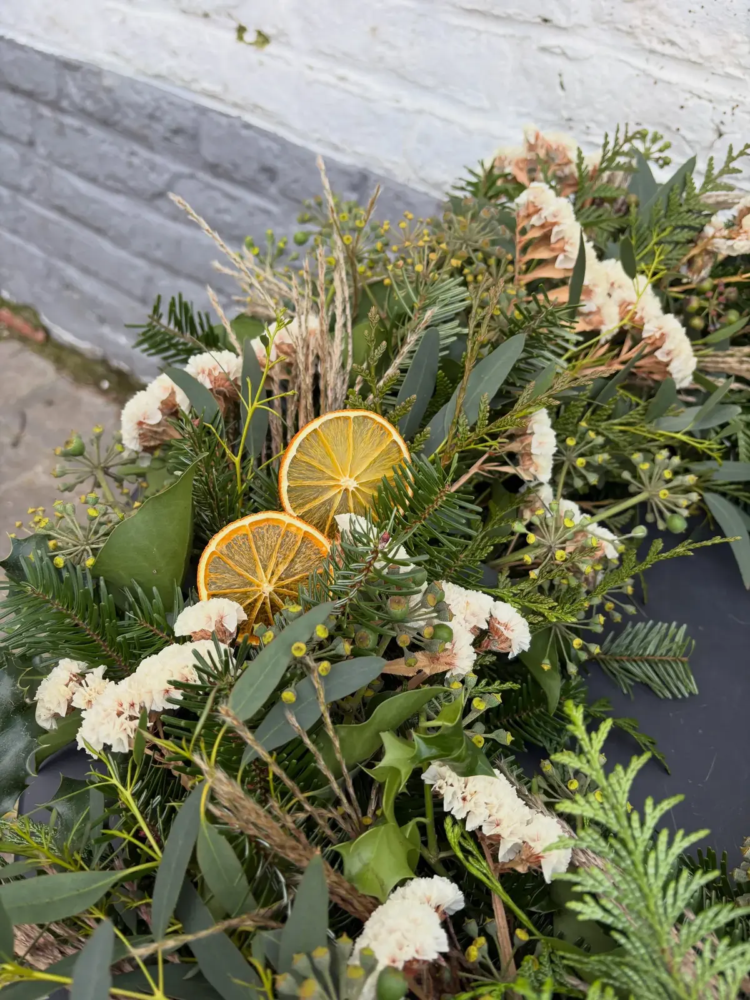
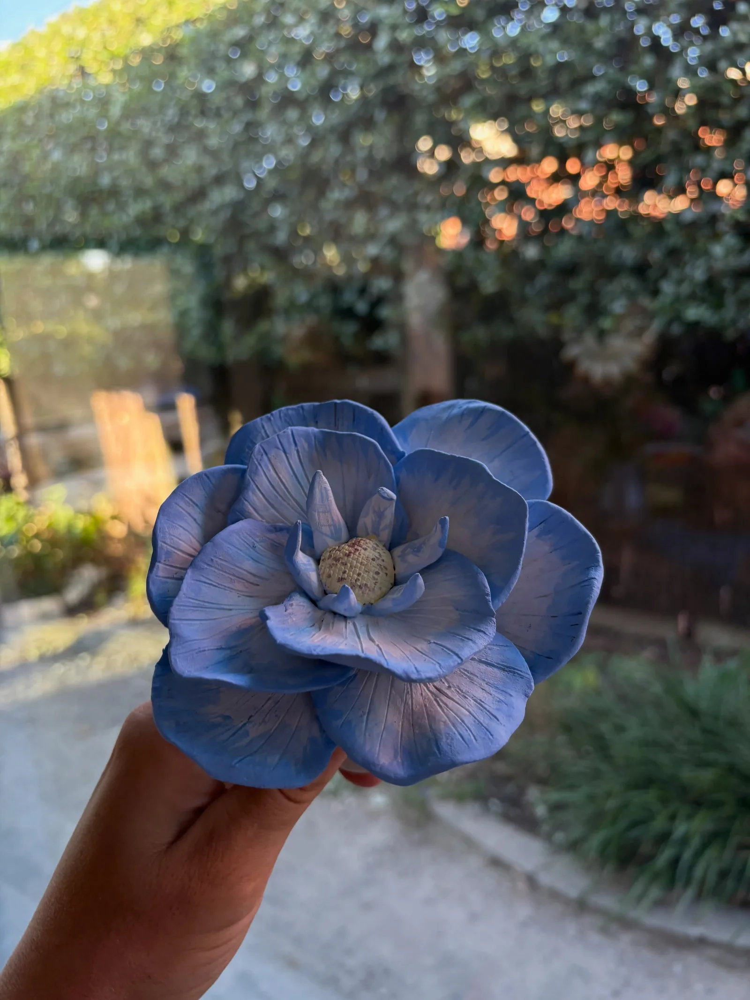
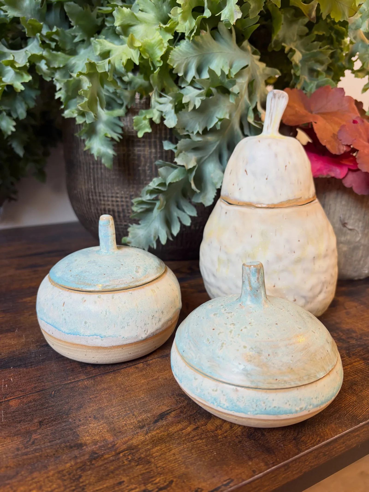
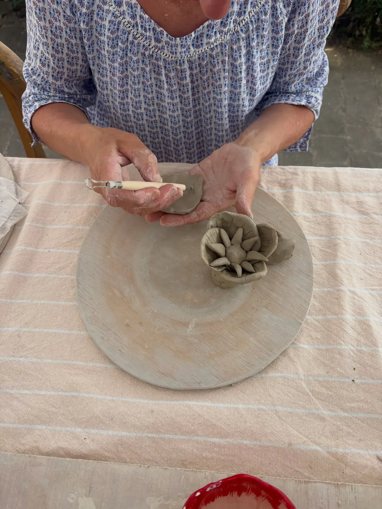
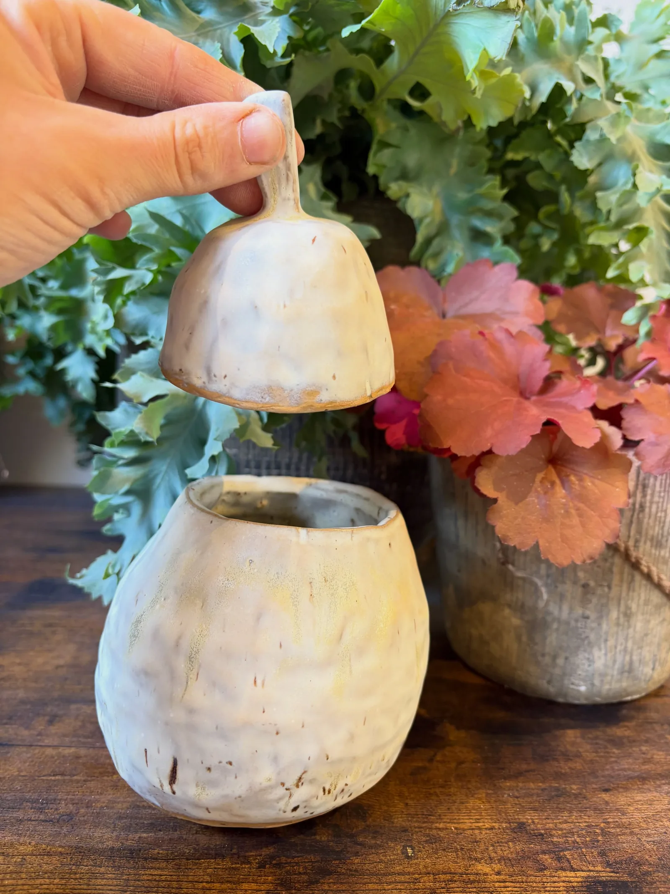
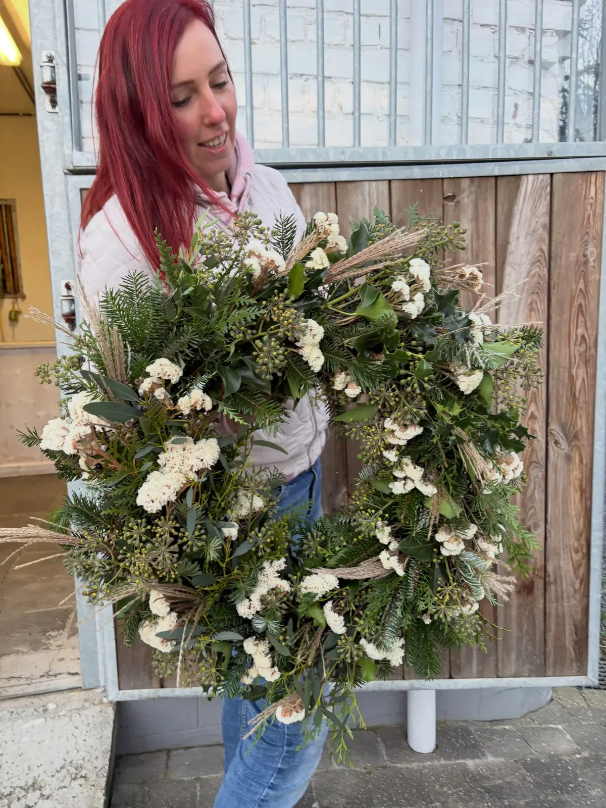
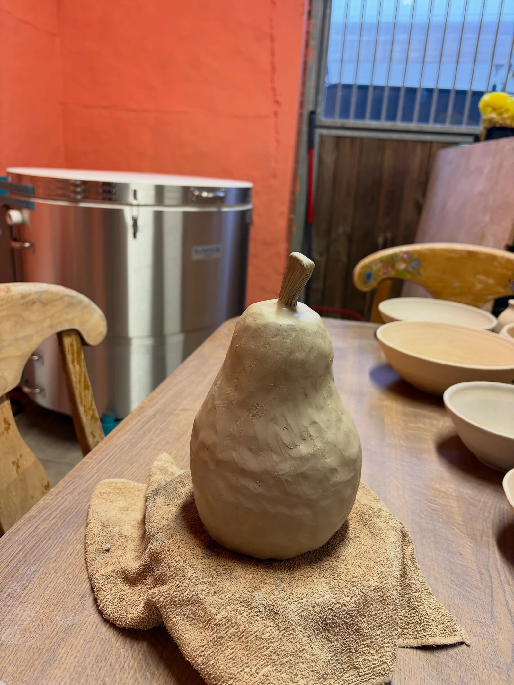

WinterKerstkrans met vers groen
Een krans van vers groen en versieringen, die je zelf bindt en mee naar huis neemt.
Wandel door de bloementuin, knip je eigen boeket en ga naar huis met een glimlach en armen vol bloemen. Alles vers, ecologisch en zonder pesticiden.

Iedereen is welkom, zonder afspraak of abonnement. Wat je plukt, betaal je ter plaatse, volledig in vertrouwen.


Breng ze gerust zelf mee, of leen ze op de pluktuin.
Wandel over de paadjes en kies welke bloemen je wil plukken.
Knip een mooie steel, maar nooit de hele plant. En meteen in het water.
Wat je plukt staat op het bord vooraan. Payconiq of cash in de brievenbus.
Naast de pluktuin werkt Jade ook met klei. Keramieken bloemen, potjes met een deksel en een bijenschaal voor in de tuin. Tijdens haar workshops maak je ze zelf, samen met haar.



De nieuwe data voor 2027 zijn bekend. Met een groep vanaf vijf personen plannen we ook een eigen moment, als teambuilding of gewoon voor de gezelligheid.

WinterEen krans van vers groen en versieringen, die je zelf bindt en mee naar huis neemt.

KeramiekBlad voor blad boetseer je je eigen bloem uit klei, die nooit verwelkt.

KeramiekJe eigen keramieken potje met deksel, van een klomp klei tot iets dat je elke dag ziet staan.


Floriste van opleiding, aan de tuinbouwschool in Kortrijk. Samen met mijn man Pieterjan werk ik in zijn bedrijf voor tuinaanleg en onderhoud. Bloemen zijn voor mij meer dan een vak: ze zelf kweken, met respect voor de natuur, vind ik gewoon magisch.
Ik wil anderen blij maken met wat de natuur ons geeft, voor mens en dier.
“Een flinke dosis humor in combinatie met heel veel kennis en liefde voor het vak.” Laura Engels, op Google
Deze week een prachtig boeket laten maken bij Jade. Bij aankomst voel je meteen de rust en je voelt je meteen welkom. Ook eens door de bloementuin mogen wandelen en wauw, zo een tuin wil ik ook wel.Noor TruyenGoogle-review
Ons gezelschap was heel erg onder de indruk van Jade's gastvrijheid en haar mooie pluktuin. Het is er mooi aangeplant, goed onderhouden en gewoon ook rustgevend om je bloemetjes te kiezen. Aanrader!BryanGoogle-review
Heerlijke plek om in alle rust een prachtig boeket samen te stellen. Veel te veel keuze....dus ik kom zeker terug. Bedankt!christa hamerlinckGoogle-review
Prachtige tuin en vriendelijke dame! Je kan ook met QR-code betalen wat erg handig is!Zoë MessaoudiGoogle-review
Dan pluk ik voor jou, op het juiste moment. Stuur een sms of bel even, en ik maak alles klaar.
Ik maakte deze demo voor jullie om te tonen wat er kan. Na een kort gesprek maak ik er iets veel persoonlijkers van, helemaal naar jullie wens.
Vrijblijvend. Ik kom langs of we bellen.
Op maat, op jullie eigen domein.
Geen voorschot. Jullie betalen pas als alles klaar is.
Hosting, domeinnaam en kleine wijzigingen, zoals nieuwe openingsuren.
Omdat een voorbeeld meer zegt dan een mail. Zo zien jullie meteen wat er kan, en het kost jullie niets.
Nee. Het gesprek is vrijblijvend. Vinden jullie het niks, dan is het daarmee gedaan.
Na ons gesprek staat jullie site binnen 10 tot 14 dagen online.
Zeker. Jullie domeinnaam kan gewoon blijven, de nieuwe site komt in de plaats van de oude.
Nee, dat doe ik op basis van ons gesprek. Eigen foto's zijn mooi meegenomen, maar niet nodig om te starten.